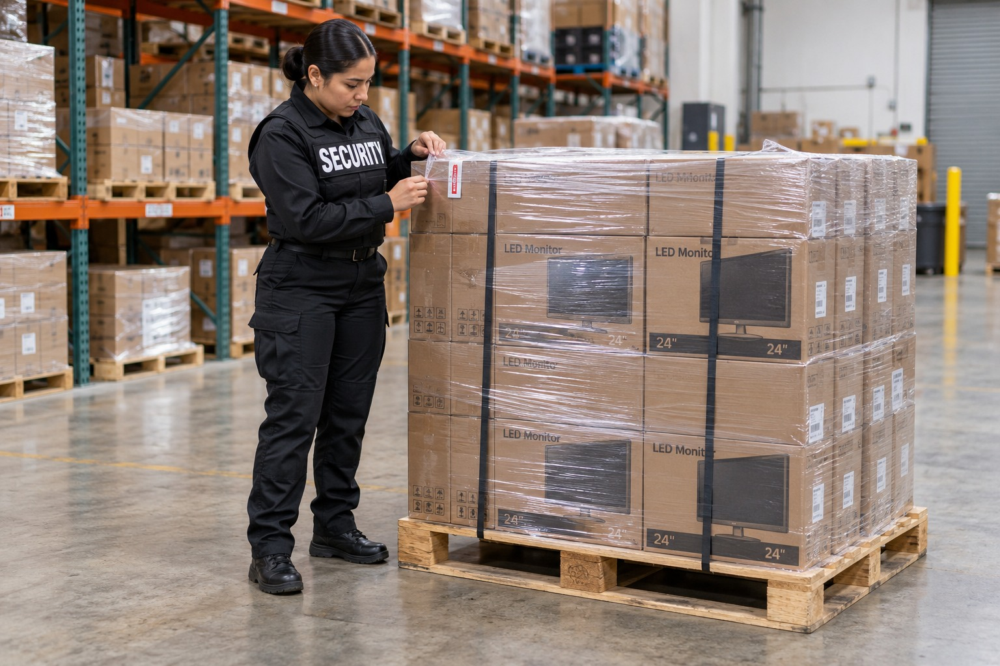
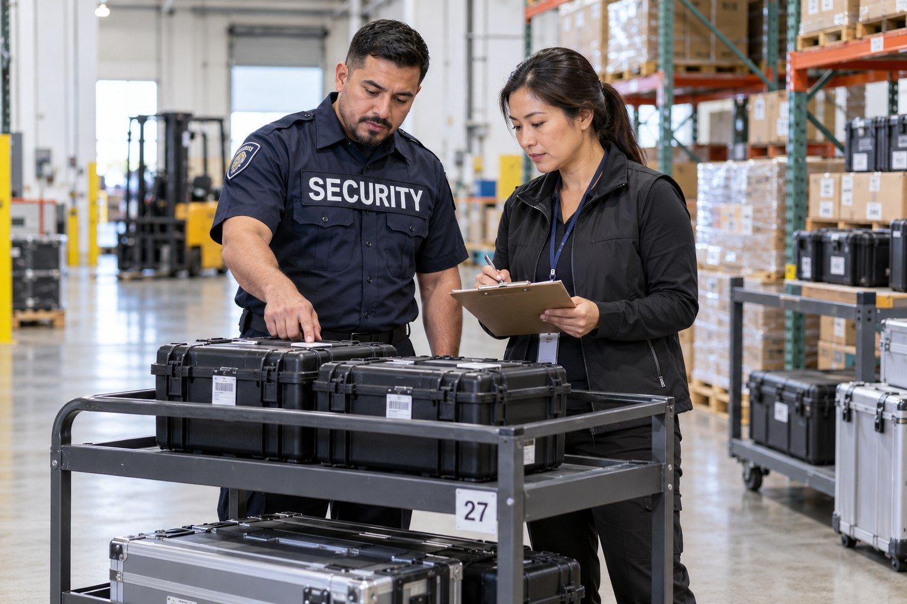

Asset Protection

Asset protection concerns may involve missing retail inventory, unauthorized access to a property, disturbances around a business or protection of equipment and product. The first distinction is between an asset concern and a general premises security concern. Both can exist at the same location, but they should not be treated as interchangeable.

A Clear Focus on Business Assets
A retailer may need attention to suspected theft and incident documentation. A property manager may need visible coverage across shared areas. A licensed dispensary may require security responsibilities involving entry, customers, product and cash. Paradigm’s asset protection service family provides a way to review these needs without assuming that one officer or one service covers everything.
Services Within Asset Protection
Loss prevention focuses on retail observation, theft related concerns and coordination with store management. Vehicle and bike patrol provide mobile security presence for larger properties and pedestrian settings. Dispensary asset protection addresses the relationship between premises security and the business’s inventory and cash concerns. K9 narcotic detection is a separate specialist service whose suitability must be confirmed for the proposed assignment.
Clients can view each service in detail through its dedicated page. Those pages explain the purpose of the service and the settings it supports. The descriptions are intended to help you identify the right conversation with Paradigm, while the responsibilities of your actual assignment are confirmed privately.
Documentation and Management Coordination
Asset protection works within the client’s business operations. Store managers, property managers and authorized business representatives remain responsible for decisions within their own roles. Security personnel can observe concerns, document incidents and communicate relevant information to those contacts. Clear separation of duties supports a more understandable working relationship.
The service does not promise to eliminate every loss or establish the cause of every inventory discrepancy. Security records describe the observations and actions relevant to the assignment. Investigative, accounting, licensing and insurance decisions belong to the appropriate professionals. This distinction keeps the asset protection scope specific without overstating what a security assignment includes.
Asset Protection in Los Angeles and San Bernardino Counties
Paradigm supports retailers, commercial property managers and licensed cannabis businesses across Los Angeles County and San Bernardino County. The inquiry may concern a single storefront, a property with several tenants or a business with more than one location. Each service can be reviewed according to the setting and the concern involved.
Contact Paradigm to describe the asset protection issue affecting your business. We will help identify the relevant service and clarify its responsibilities alongside any existing guard coverage. BSIS publishes California security guard registration and training requirements. The official reference is available for clients reviewing the regulatory framework for security personnel.